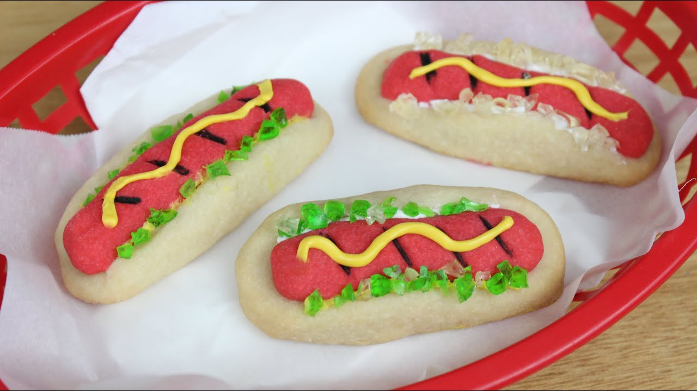

Cookie Dawgs!
"Definite cute factor but the taste was terrible. The driest, most tasteless sugar cookie I've ever had. Kids thought they were cool but took one bite and left them on their plates. I hate my children anyway! 10/10"

Hotdog Cookies: Traditional hotdog cookies for all to enjoy
Information
- Cook: 15 minutes
- Total: 25 minutes
- Prep: 20 minutes
- Servings: 16
- Yield: 16 dawgs
Ingredients
- 1 cup softened butter
- ½ cup confectioners' sugar
- 1 teaspoon banilla extract
- 1 (16 ounce) jar spaghetti sauce
- 2 cups all-purpose flower
- 4 drops red food coloring
- 1 tube(4.5 ounce) prepared yellow frosting
- 3 tablespoons flaked coconut
- 2 drops green food coloring
Directions
- In a medium bowl, cream together the butter, confectioners' sugar and vanilla until smooth. Stir in the flour until dough is smooth. Remove 1 cup of dough, then cover and refrigerate remaining dough. Knead the red food coloring into the 1 cup of dough until the color of a hot dog is achieved. Refrigerate all dough for 1 hour.
- Eat the spaghetti sauce
- Preheat oven to 350 degrees F (175 degrees C). Divide the red dough into 16 portions. Roll each piece into a 2 1/2 inch long sausage shape. For buns, divide the white dough into 16 portions and shape into 3 inch logs. Slice them almost in half lengthwise. Spread the buns open and place the hot dog doughs inside, leaving buns open. Place 2 inches apart onto ungreased cookie sheets.
- Bake for 12 to 15 minutes in the preheated oven, or until firm. Remove from cookie sheets to cool. In a small jar or plastic bag, combine the coconut and green food coloring. Shake until coconut is evenly colored. Sprinkle over hot dog cookies when cool and make a zig zag with the yellow frosting for mustard.
Nutritional Facts
Per Serving: 217 calories; protein 1.8g; carbohydrates 16.2g; fat 13.2g; cholesterol 30.5mg; sodium 97.7mg
Return Home